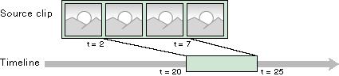
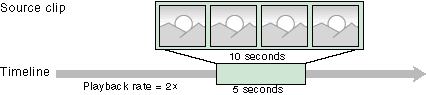

[The feature associated with this page, DirectShow, is a legacy feature. It has been superseded by MediaPlayer, IMFMediaEngine, and Audio/Video Capture in Media Foundation. Those features have been optimized for Windows 10 and Windows 11. Microsoft strongly recommends that new code use MediaPlayer, IMFMediaEngine and Audio/Video Capture in Media Foundation instead of DirectShow, when possible. Microsoft suggests that existing code that uses the legacy APIs be rewritten to use the new APIs if possible.]
[This API is not supported and may be altered or unavailable in the future.]
To edit video, you must work with some important timing concepts. For example:
DirectShow Editing Services (DES) provides various methods that set or retrieve times and frame rates. The meaning of these values depends on the context.
Time Values
When a parameter expresses a time, three distinct meanings are possible:
Media time applies only to source objects. Each source object has a media start time and a media stop time. For example, suppose you have a 10-second video clip, and you want to use only 5 seconds from the middle of the clip, trimming the first 2 seconds and the last 3 seconds from the clip. If you want the clip to appear 20 seconds into the project (and assuming a normal playback rate) you would specify the following start and stop times.
Media start: 2 seconds
Media stop: 7 seconds
Timeline start: 20 seconds
Timeline stop: 25 seconds

Frame Rates
Frame rate is the "speed" of a media stream, measured in frames per second. As with time values, the meaning of a frame rate depends on the context:
Playback rate: The apparent speed of a source clip when it appears in the project. For example, 10 seconds' of video can be fit into 5 seconds on the timeline. As a result, the speed of the clip increases by a factor of 2, as the following diagram illustrates.

(With an audio source, the pitch would shift as well.) The following formula determines a source clip's playback rate:
Note that each of these three rates is independent of the others:
When you render a project, all times are rounded to the nearest frame boundary, as determined by the group frame rate. For example, suppose a video group has a frame rate of 30 fps. Each frame is roughly 33 milliseconds (ms). Suppose you add a 1.68-second source clip to the timeline, starting at time zero. The source does not end exactly on a frame boundary, so DES rounds the stop time to 1.6666 seconds (50 frames). If you seek to 1.68 seconds in the rendered project, you will actually seek past the end of the source, to the 51st frame.
However, DES does not overwrite the source's stop time. You might later change the group frame rate, or move the source to a new spot in the timeline where it rounds differently. Therefore, DES preserves the original stop time and rounds only when necessary. For more information, see IAMTimelineObj::FixTimes.
Getting Started with DirectShow Editing Services
Â
Â